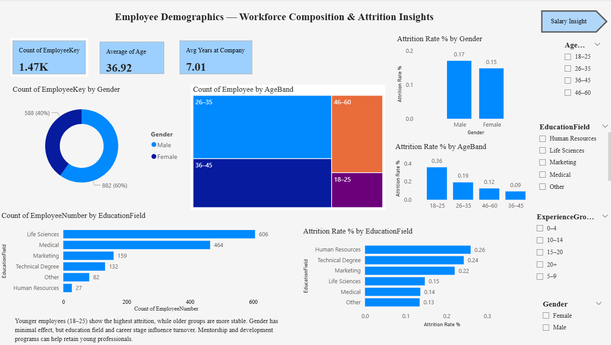
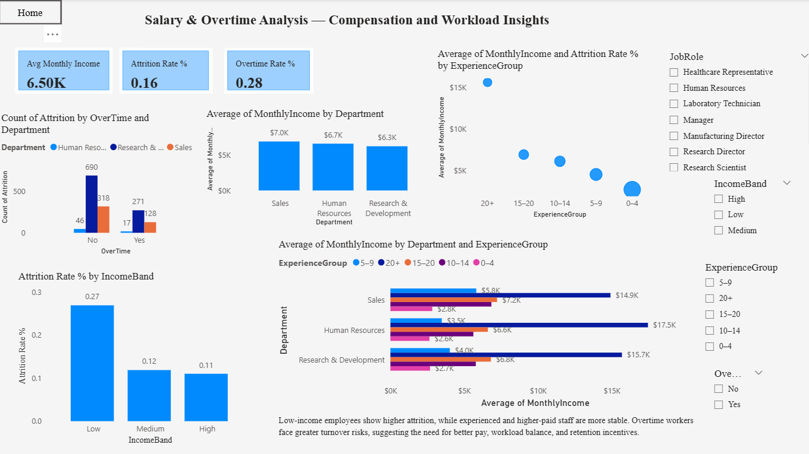

HR Analytics Dashboard (Power BI)
Attrition Overview Page

Demographics Page
Salary & Overtime Page
Designed an interactive HR Analytics Dashboard using Power BI to analyze employee attrition, demographics, compensation, and overtime trends. The dashboard provides data-driven insights to help HR departments identify workforce risks, understand the root causes of employee turnover, and make informed retention decisions. This project demonstrates a complete Business Intelligence workflow — from data cleaning and modeling to DAX-based KPIs and interactive storytelling visuals.
- Tools Used: Power BI, Power Query (M), DAX, Excel, Data Modeling
- KPIs: Total Employees, Attrition Count, Attrition Rate %, Average Monthly Income, Overtime Rate %
- Visuals: Attrition by Department, Job Role, Age Band, Income Band, Education Field, and Experience Group
- Insights:
- Overall attrition rate: 16% (237 employees left out of 1,000).
- Sales and Human Resources departments show the highest turnover.
- Low-income and younger employees (18–25) have the highest attrition.
- Overtime (28%) indicates workload pressure and burnout risk.
- 🧭 Recommendations: Improve pay equity, manage overtime, and introduce mentorship programs for early-career staff.